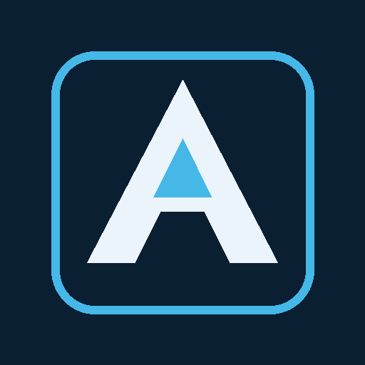

Technology built around the business.
Atlas Vertical Technologies designs modular software, AI-enabled workflows, plan intelligence, and operating systems for companies that need technology to fit the way they actually work.

One architecture. Multiple industries.
AVT combines vertical SaaS, artificial intelligence, workflow automation, and domain-specific tooling into operating platforms that adapt to different industries without losing the details that make each business unique.
Vertical SaaS
Purpose-built operating systems with industry-specific terminology, workflows, records, dashboards, and permissions.
AI & Automation
Intelligence woven into estimating, documents, planning, analysis, scheduling, support, and day-to-day decisions.
Plan Intelligence
Measurement, takeoff, layout, markup, and drawing workflows designed for the field and office.
Operational Systems
Connect projects, inventory, purchasing, finance, production, scheduling, and reporting in one operating layer.
Modular by design.
Start with the core and add the capabilities the operation needs. AVT products are designed to work independently or together as one connected business system.
Atlas
The central operating system for projects, schedules, materials, finance, documents, teams, and operational visibility.
Atlas Forge
A plan intelligence workspace for measurement, scale, smart snapping, layouts, markups, expansion joints, and automated counts.
Athena
An AI layer designed to understand business context, assist with decisions, work across modules, and bring intelligence into everyday operations.
Hermes
A drawing and document workflow layer focused on structured layouts, shop-drawing logic, and production-ready outputs.
Built to become the software of the industry.
The same architectural foundation can be configured around the language, objects, processes, and data model of a specific market.
Atlas Construction
Estimating, takeoff, project execution, field coordination, materials, shop drawings, billing, scheduling, and operational visibility for contractors and specialty trades.
Atlas Marine
Hull-centric production, scheduling, inventory, purchasing, kitting, drawings, QA, sea trial, delivery, and warranty workflows for yacht manufacturing.
See Atlas in operation.
Explore demonstration environments built from the same modular Atlas architecture and configured around the workflows of each vertical.
Delamere Demo
Atlas configured for fence and railing operations, including projects, estimating, scheduling, materials, field coordination, finance, and Athena.
Open Delamere DemoAtlas Marine Demo
A hull-centric manufacturing environment covering production, purchasing, inventory, planning, QA, delivery, warranty, and operational intelligence.
Open Marine DemoAtlas Vertical Technologies is building a reusable vertical-platform architecture: choose the market, apply the right terminology, modules, workflows, data model, and intelligence, then deploy a system that feels native to that business.
Atlas Vertical Technologies
Enterprise Technology. Strategic Solutions. Software shaped around the operation—not the other way around.